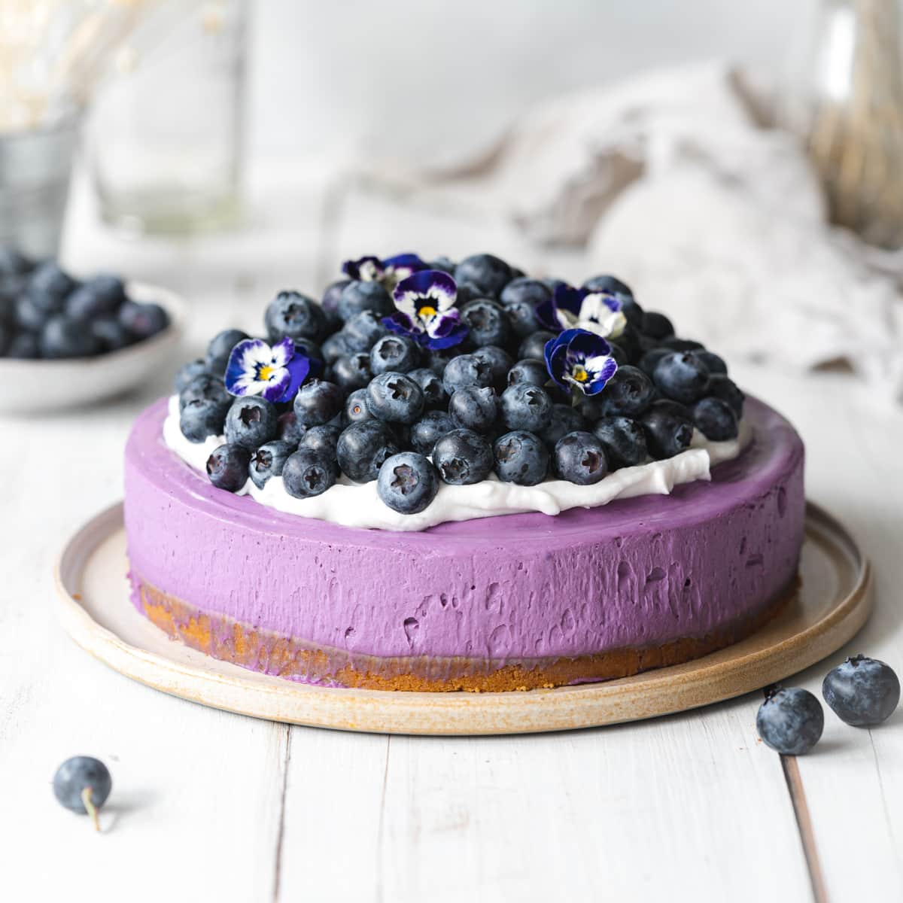

Blueberry Cheesecake

Description
Rich, delicious, and BLUE! This cake is sure to become a family favorite!
Ingredients
- 2 packages (250g each) Philadelphia light or regular cream-
cheese softened
- 1/1/2 cups granulated sugar
- 1/2 tsp. vanilla
- 2 eggs
- 1 cup fresh or frozen blueberries
- 9 inch prepared graham wafer crumb crust
- 1 container of Cool Whip Light or Regular Whipped Topping
directions
- Mix the two packages of cream cheese, sugar, and vanilla at
medium speed with electric mixer until well blended.
- Add two eggs, mix until blended.
- Stir in 1/2 cup blueberries.
- Pour into a 9 inch prepared graham wafer crumb crust.
- Sprinkle with the remaining 1/2 cup blueberries.
- Bake at 350 degree F oven for 40 minutes or until center is
almost set.
- Cool.
- Refrigerate 3 hours or overnight.
- Garnish with the cool whip light or regular whipped topping.
Makes 8 services
Recipes Home